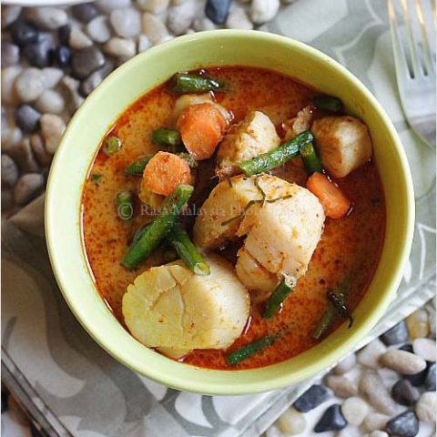

Red Curry

Ingredients
- 1 Tbsp Oil
- 1 1/2 Tbsp Mae Ploy Red Curry Paste
- 4 oz Scallops
- 4 oz Chicken
- 80 mL Coconut Milk
- 1/4 Cup water
- 2 Long Beans
- 1/2 cup thickly sliced Carrots
- 1 Kaffir Lime Leaf
- 1/4 Tsp Fish Sauce
- 2 Tsp Sugar
Steps
- Heat up small pot with cooking oil
- Saute curry paste until aromatic
- Add the scallops and chicken and stir
- Add coconut milk, water, long beans, carrots, kaffir lime leaves, and bring to a boil
- Add fish sauce, sugar, stir for 10 seconds
- Serve with Jasmine Rice
Source